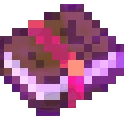

Защита
«Защита» — зачарование, которое уменьшает урон, получаемый из всех источников, за исключением урона, нанесённого голодом, звуковой атакой стража, пустотой или командой /kill.
Некоторые характеристики защиты в зависимости от уровня зачарования:
Защита I (версия Java) — 4% урона, (версия Bedrock) — 5%.
Защита II — 8% (версия Java), 10% (версия Bedrock).
Защита III — 12% (версия Java), 15% (версия Bedrock).
Защита IV — 16% (версия Java), 20% (версия Bedrock).
Некоторые особенности зачарования:
Формула снижения урона составляет (4 × уровень)% для каждого предмета брони.
Если все предметы брони зачарованы защитой IV, то максимальное снижение урона — 64%.
В отличие от некоторых других чар брони, «Защита» не даёт никаких побочных эффектов, кроме уменьшения урона.
Некоторые несовместимости:
«Защита» не совместима с такими чарами, как «Защита от снарядов», «Огнеупорность» и «Взрывоустойчивость».
Бесконечность
«Бесконечность» — зачарование для лука, которое позволяет выпускать стрелы неограниченное количество раз, используя лишь одну стрелу в инвентаре.
Некоторые особенности зачарования:
Работает только с обычными стрелами.
Выпущенные стрелы нельзя восстановить, кроме как в творческом режиме (в котором они стираются, а не добавляются в инвентарь игрока).
Арбалет по-прежнему расходует стрелы, если для него используют команды для добавления «Бесконечности».
«Бесконечность» и «Починка» несовместимы.
Бич членистоногих
«Бич членистоногих» — зачарование для меча и топора, которое позволяет оружию наносить дополнительный урон паукам, чешуйницам и пчёлам.
Некоторые особенности зачарования:
Максимальный уровень — 5.
С каждым новым уровнем (всего пять) зачарование добавляет 2,5 единицы дополнительного урона.
При попадании зачарование накладывает на моба Замедление со случайной продолжительностью от 1 до 1,5 секунды на первом уровне. Время действия замедления увеличивается на 0,5 секунды за каждый уровень.
Чары «Бич членистоногих» не совмещаются с чарами «Острота» и «Небесная кара».
Время действия замедления увеличивается на 0,5 секунды за каждый уровень, максимум — до 3,5 секунд.
Быстрая перезарядка
«Быстрая перезарядка» — зачарование, которое можно наложить на арбалет. Оно сокращает время, требуемое для нанесения следующей атаки.
Зачарование имеет три уровня:
1-й уровень — скорость перезарядки снижается на 0,25 секунды.
2-й уровень — скорость перезарядки снижается на 0,50 секунды.
3-й уровень — скорость перезарядки снижается на 0,75 секунды.
Везучий рыбак
«Везучий рыбак» — зачарование для удочки, которое увеличивает шанс поймать сокровище и уменьшает шанс поймать мусор при ловле рыбы.
Зачарование имеет три уровня:
1-й уровень — на 6% выше шанс поимки сокровища и на 2,5% ниже вероятность поймать хлам.
2-й уровень — на 7% выше шанс поимки сокровища и на 5% ниже вероятность поймать хлам.
3-й уровень — на 8% выше шанс поимки сокровища и на 7,5% ниже вероятность поймать хлам.
Верность
«Верность» — зачарование, которое заставляет трезубец возвращаться к владельцу после броска.
Скорость возврата зависит от уровня зачарования. Трезубец движется к владельцу по прямой линии и может проходить через все блоки и объекты, не задевая их.
Некоторые особенности зачарования:
Зачарование имеет три уровня
Если игрок путешествует между измерениями, трезубец пытается вернуться к нему, но остаётся в текущем измерении.
Если трезубец попытается вернуться к игроку, пока его инвентарь полон, он начнёт бесконечно кружить вокруг игрока, пока не освободится место в инвентаре.
Если игрок умирает во время возвращения трезубца, он теряет форму предмета и подвергается разрушению.
Взрывоустойчивость
«Взрывоустойчивость» — зачарование, которое снижает урон от взрывов и уменьшает отдачу.
Взрывозащита снижает урон, получаемый пользователем от всех взрывов, включая, помимо прочего, криперов, тротил, кровати/якоря возрождения и даже ракеты фейерверков.
Некоторые характеристики защиты в зависимости от уровня зачарования:
«Взрывоустойчивость» I — 8% урона.
«Взрывоустойчивость» II — 16% урона.
«Взрывоустойчивость» III — 24% урона.
«Взрывоустойчивость» IV — 32% урона.
Некоторые особенности зачарования:
Формула снижения урона от взрывов выглядит так: (8 × level)%, то есть при каждом дополнительном уровне ещё 8% урона нейтрализуется. Самый высокий уровень (Взрывоустойчивость IV) поглощает 32% урона от любого взрыва.
В Java Edition функция защиты от взрыва имеет побочный эффект, заключающийся в уменьшении отдачи от взрывов на (15 × level)%, максимум на 60% по сравнению с функцией защиты от взрыва IV. Этот эффект не накладывается на несколько единиц брони; если чары наложены на несколько единиц, используется только уменьшение нокдауна самого высокого уровня.
Снижение урона от защиты, огненной защиты, падения перьев, защиты от взрывов и защиты от снарядов суммируется до максимального предела в 80%.Любое дальнейшее снижение урона, которое обычно применяется, игнорируется. Этот предел может быть достигнут при 10 уровнях защиты от взрывов на броне игрока или при сочетании 12 уровней защиты с 4 уровнями защиты от взрывов.
Воспламенение
«Воспламенение» — зачарование, которое позволяет стрелять горящими стрелами.
Во время выстрела стрела поджигает мобов, игроков и ТНТ (можно взорвать динамит). Урон от огня зависит от уровня зачарования
Зачарование имеет два уровня:
«Воспламенение I уровня» — урон от огня 3 (1,5 сердца) за 3 такта.
«Воспламенение II уровня» — урон от огня 7 (3,5 сердца) за 7 тактов.
Громовержец
«Громовержец» — зачарование для трезубца, при попадании которого во врага ударяет молния.
С помощью «Громовержца» можно, например, превратить свинью в зомбифицированного пиглина, жителя в ведьму или крипера в заряженного крипера.
Некоторые особенности зачарования:
максимальный уровень — 1.
Работает только в грозу.
Добыча
«Добыча» — зачарование, которое увеличивает количество лута, выпадающего из мобов при убийстве мечом.
Некоторые особенности зачарования:
Максимальный уровень — 3.
Увеличение составляет 4% за уровень для обычных предметов и 1% за уровень для редких предметов.
Например, меч с «Добычей» III может давать на 12% больше обычных предметов и на 3% больше редких предметов за убийство.
«Добыча» совместима со всеми другими зачарованиями на меч.
Заговор огня
«Заговор огня» — это зачарование, которое позволяет мечу поджигать врагов при ударе.
Некоторые особенности зачарования:
Максимальный уровень — 2.
Осторожно с эндерменами, они телепортируются при поджигании.
Неэффективно в Нижнем мире, мобы, такие как ифриты и свинозомби, невосприимчивы к огню.
Эффекты зачарования зависят от его уровня
«Заговор огня I» — поджигает цель на 4 секунды.
«Заговор огня II» — поджигает цель на 8 секунд.
Защита от снарядов
«Защита от снарядов» — это зачарование, которое уменьшает урон, наносимый снарядами.
Некоторые особенности зачарования:
Применяется ко всем видам брони.
Уменьшает урон от стрел, метательных трезубцев, пуль шулкера, слюны ламы и огненных шаров.
Снижает прямой урон от огненных шаров гастов и иссушающих черепов, но не от их взрывов.
Не влияет на урон от брызг зелья нанесения вреда, огненных шаров дракона, фейерверковых ракет или звуковых ударов.
В отличие от заклинаний защиты от взрыва и огня, «Защита от снарядов» не даёт никаких побочных эффектов, кроме уменьшения урона.
Формула снижения урона от снарядов такова: level × 8%, то есть при каждом дополнительном уровне поглощается ещё 8% урона. Самый высокий уровень (Защита от снарядов IV) поглощает 32% (4 × 8%) урона от снарядов.
Некоторые характеристики защита от снарядов в зависимости от уровня зачарования:
«Защита от снарядов» I — 8% урона.
«Защита от снарядов» II — 16% урона.
«Защита от снарядов» III — 24% урона.
«Защита от снарядов» IV — 32% урона.
Ледоход
«Ледоход» — это зачарование, которое позволяет игрокам ходить по воде, при этом каждый шаг превращает воду под ними в лёд.
Некоторые особенности зачарования:
Действует только при движении по земле (нельзя падать, прыгать или летать).
Водные блоки должны быть на том же уровне, что и перемещаемый блок, чтобы превратиться в лёд.
Для сохранения льда необходимо непрерывное движение, иначе он растает.
Когда игрок прекращает ходить по льду, созданному зачарованием, лёд постепенно тает вокруг и под игроком (в этот момент игрок падает в воду).
Лёд, созданный зачарованием, дольше сохраняется ночью, так как в это время нет солнечного света, который мог бы его растопить.
Небесная кара
«Небесная кара» — это зачарование, которое увеличивает урон, наносимый нежити. Его можно наложить на меч или топор.
«Небесная кара» несовместима с чарами «Острота» и «Бич членистоногих»
Эффект от «Небесной кары» зависит от уровня зачарования:
I уровень — дополнительный урон нежити 2,5 (1,25 сердечка).
II уровень — дополнительный урон нежити 5 (2,5 сердечка).
III уровень — дополнительный урон нежити 7,5 (3,75 сердечка).
IV уровень — дополнительный урон нежити 10 (5 сердечка).
V уровень — дополнительный урон нежити 12,5 (6,25 сердечка).
Урон распространяется на следующие виды нежити:
все типы скелетов (обычный, зимогор, скелет-иссушитель).
иссушитель.
все типы зомби (обычный, кадавр, зомбифицированный пиглин, зомби-житель, утопленник).
два типа лошадей (лошадь-зомби, лошадь-скелет).
фантом.
зоглин.
Невесомость
«Невесомость» — это зачарование, которые уменьшают урон от падения.
Некоторые особенности использования:
Уменьшает урон не только от падения с большой высоты, но и от брошенных жемчужин Края или от езды на мобе, который получает значительный урон от падения.
Снижает урон от падения на (12 x level)%. С «Невесомостью IV» этот показатель может достигать 48%.
Можно дополнительно увеличить снижение урона с помощью зачарования «Защита».
Эффект от ««Невесомости»» зависит от уровня зачарования:
I уровень — 12% урона.
II уровень — 24% урона.
III уровень — 36% урона.
IV уровень — 48% урона.
Огнеупорность
«Огнеупорность» — это зачарование, которое снижает урон от любого вида огня.
Некоторые особенности использования:
Максимальный уровень - 4.
Формула для снижения урона от огня (8 × level)% до максимального снижения на 32%.
Защита от огня имеет побочный эффект: время горения при поджоге (15 × level)% сокращается. Этот эффект суммируется на нескольких предметах брони, то есть если у игрока на броне как минимум 7 уровней защиты от огня, то время горения сокращается более чем на 100%, что позволяет игроку мгновенно потушить огонь и, следовательно, не загореться.
Эффект от «Огнеупорности» зависит от уровня зачарования:
I уровень — 8% урона.
II уровень — 16% урона.
III уровень — 24% урона.
IV уровень — 32% урона.
Острота
«Острота» — это зачарование, которое увеличивает урон, наносимый мечом.
Некоторые особенности использования:
Максимальный уровень - 5.
Увеличивает урон атаки меча на (0.5 * level + 0.5) дополнительного урона.
«Острота» совместима с большинством других зачарований, кроме «Небесной кары» и «Бича членистоногих».
Нанесение дополнительного урона зачарования «Остроты» зависит от уровня:
I уровень — 1 урон.
II уровень — 1.5 урона.
III уровень — 2 урона.
IV уровень — 2.5 урона.
V уровень — 3 урона.
Откидывание
«Откидывание» — это зачарование для лука, которое увеличивает отдачу стрел. Это не влияет на урон, наносимый стрелами.
Некоторые особенности использования:
Максимальный уровень - 2.
На каждый уровень «Откидывание» добавляет к базовому расстоянию отката примерно 3 блока. Если с помощью команд увеличить уровень «Откидывание» более 2, то дополнительный эффект отката будет ограничен значением 255.
Отдача
Отдача — это зачарование, которое увеличивает отдачу меча.
Некоторые особенности использования:
Максимальный уровень - 2.
Отдача I увеличивает значения knockback.normal или knockback.sprinting на 105%, а Отдача II увеличивает эти значения на 190%.
В Java Edition игроки могут отбросить броню назад с помощью зачарования Отдача, но не в Bedrock Edition.
По умолчанию в Minecraft, если атакующие игроки бегут, они наносят больше урона тем, кто получает урон.
Плотность
Плотность — это зачарование, которое увеличивает урон, наносимый булавой.
Некоторые особенности использования:
Максимальный уровень - 5.
Плотность является взаимоисключающей с «Остротой», «Бич членистоногих», «Небесной карой» и «Пробитием».
Подводная ходьба
Подводная ходьба — это зачарование, которое увеличивает скорость передвижения под водой.
Некоторые особенности использования:
Максимальный уровень - 3.
Каждый уровень зачарования на треть уменьшает замедление игрока водой, в том числе снижает скорость, с которой поток воды толкает игрока, когда он стоит на месте.
На третьем уровне игрок может плавать так же быстро, как ходить по суше. Более высокие уровни не влияют на скорость.
Обычно зачарование применяется к ботинкам, но с помощью команд его можно наложить и на другие типы брони (например, на шлем).
Зачарование влияет только на скорость горизонтального движения в воде, на скорость вертикального движения оно не действует.
Подводник
Подводник — это зачарование, которое увеличивают скорость работы под водой.
Некоторые особенности использования:
Максимальный уровень - 1.
Подводное дыхание
Подводное дыхание — это зачарование, которое позволяет игроку дольше расходовать запас кислорода, находясь под водой.
Некоторые особенности использования:
Максимальный уровень - 3.
Есть три уровня зачарования:
I уровень — добавляет 15 секунд к 15 секундам дыхания в воде по умолчанию, в общей сложности до 30 секунд. Также снижает общий урон от утопления.
II уровень — добавляет 30 секунд к 15 секундам дыхания в воде по умолчанию, итого до 45 секунд. Ещё больше снижает общий урон от утопления.
III уровень — увеличивает время дыхания в воде на 45 секунд по сравнению с 15 секундами времени дыхания по умолчанию, в общей сложности до 1 минуты. Уменьшает урон, наносимый игроком при утоплении в наибольшей степени.
Порыв ветра
Порыв ветра — это зачарование для булавы, которое подбрасывает игрока в воздух после выполнения сокрушительной атаки.
Для добычи этого зачарования необходимо пройти Зловещее испытание в Камере испытаний. Некоторые особенности использования:
Максимальный уровень - 3.
Есть три уровня зачарования:
I уровень — 7 блоков.
II уровень — 14 блоков.
III уровень — 21 блок.
Починка
Починка — это зачарование, которое позволяет восстанавливать прочность брони, оружия или инструментов за опыт.
Если предмет находится в руке или надет на игрока, то опыт не пополняет полоску опыта персонажа, а идёт на восстановление прочности. Починка не работает, если предмет лежит в инвентаре.
Преимущества:
Не требует расхода ресурсов.
Сохраняет все зачарования.
Работает постепенно, что удобно при постоянном получении опыта.
Приманка
Приманка — это зачарование для удочки, которое сокращает время до клёва и увеличивает шанс поймать рыбу.
Если предмет находится в руке или надет на игрока, то опыт не пополняет полоску опыта персонажа, а идёт на восстановление прочности. Починка не работает, если предмет лежит в инвентаре.
Эффект «Приманки» на разных уровнях:
I уровень — клёв быстрее на 5 секунд, шанс поймать мусор — 9%, сокровище — 4%, рыбу — 87%.
II уровень — клёв быстрее на 10 секунд, шанс поймать мусор — 8%, сокровище — 3%, рыбу — 89%.
III уровень — клёв быстрее на 15 секунд, шанс поймать мусор — 7%, сокровище — 2%, рыбу — 91%.
Пробитие
Пробитие — это зачарование для буловы, которое при ударе будет снижать эффективность брони моба или игрока.
Действие: делает любой удар булавой (как обычный, так и сокрушающий) сильнее против бронированных целей, понижая эффективность их брони на 15% за каждый уровень. Эффект «Пробитие» на разных уровнях:
I уровень — 15%.
II уровень — 30%.
III уровень — 45%.
IV уровень — 60%.
Проворство
Проворство — это зачарование, которое увеличивает скорость игрока при передвижении в приседе.
Чем выше уровень зачарования, тем выше скорость. Зачарование имеет четыре уровня.
Проклятие несъёмности
Проклятие несъёмности — это зачарование, которое закрепляет предметы в слотах брони, после чего их невозможно снять.
Проклятье утраты
Проклятье утраты — это зачарование, которое заставляет предмет исчезать после смерти.
Чары можно наложить на все предметы, вещи и броню.
Пронзатель
Пронзатель — это зачарование, которое наносит дополнительный урон мобам при использовании трезубца в ближнем бою под водой.
В версии Java дополнительный урон получают только водные мобы, не входят обычные мобы, случайно оказавшиеся в воде. Утопленники также не получают дополнительного урона, так как они считаются толпой нежити, а не водной толпой.
Зачаровние имеет 5 уровней. Эффект «Пронзатель» на разных уровнях:
I уровень — 2 урона.
II уровень — 3 урона.
III уровень — 4 урона.
IV уровень — 6 урона.
V уровень — 7 урона.
Пронзающая стрела
Пронзающая стрела — это зачарование, которое позволяет стрелам пробивать монстров насквозь.
Максимальный уровень - 4. Количество пробиваемых мобов зависит от уровня чар:
I уровень — 2 сущности.
II уровень — 3 сущности.
III уровень — 4 сущности.
IV уровень — 5 сущностей.
Прочность
Прочность — это зачарование, которое увеличивает время использования любого предмета.
Для оружия (меч, лук, булава, трезубец) и инструментов (кирка, топор, лопата, мотыга, удочка, ножницы, огниво) чары прочности дают следующий эффект:
I уровень — увеличивают срок службы оружия и инструмента в 2 раза.
II уровень — увеличивают срок службы оружия и инструмента в 3 раза.
III уровень — увеличивают срок службы оружия и инструмента в 4 раза.
Для брони (шлем, кираса, поножи, ботинки) используется иная формула расчёта шанса не потерять прочность:
I уровень — увеличивают срок службы брони на 25%.
II уровень — увеличивают срок службы брони на 36%.
III уровень — увеличивают срок службы брони на 43%.
Разящий клинок
Разящий клинок — это зачарование, которое увеличивает урон атаки игрока, когда он бьёт мечом сразу по нескольким врагам.
Есть три уровня зачарования, на каждом последующем общий урон по окружающим цель врагам увеличивается:
I уровень — 50% от общего урона.
II уровень — 67% от общего урона.
III уровень — 75% от общего урона.
Сила
Сила — это зачарование для лука, которое увеличивает урон от стрел.
Формула расчёта урона: 25% × (уровень + 1), округлённый до ближайшей половины сердечка. Эффект от «Силы» зависит от уровня зачарования:
I уровень — увеличение урона на 50%.
II уровень — увеличение урона на 75%.
III уровень — увеличение урона на 100%.
IV уровень — увеличение урона на 125%.
V уровень — увеличение урона на 150%.
Скорость души
Скорость души — это зачарование, которое увеличивает скорость передвижения игрока по двум типам блоков: песку душ и почве душ.
Получить зачарование можно при торговле с пиглинами или найти в сундуках. Скорость увеличивается в зависимости от уровня зачарования:
I уровень — минимальное увеличение скорости.
II уровень — среднее увеличение скорости.
III уровень — максимальное увеличение скорости.
Тройной выстрел
Тройной выстрел — это зачарование, при котором при выстреле арбалета летит три стрелы: первая — прямо, вторая — вправо, третья — влево.
Арбалет с функцией Multishot выпускает три стрелы при каждом выстреле, направляя их в разные стороны (на расстоянии 10° по горизонтали друг от друга), но расходует только одну стрелу. После выстрела можно подобрать только центральную стрелу. В Java Edition из-за иммунитета к урону только одна стрела из того же выстрела может нанести урон тому же мобу; остальные стрелы, попавшие в этого моба, отклоняются.
Наконечники/спектральные стрелы и фейерверки, выпущенные из многозарядного арбалета, дублируются таким же образом.
Арбалеты с зачарованием «Многозарядность» расходуют три единицы прочности на выстрел вместо обычной одной.
Тягун
Тягун — это зачарование, которое позволяет запустить игрока в том направлении, куда он направит свой трезубец.
«Тягун» подходит для быстрого перемещения. Также его можно использовать как замену фейерверков для элитр во время дождя или если поблизости есть источник воды.
Особенности:
Зачарование можно использовать только тогда, когда владелец трезубца мокрый. Это условие выполняется, если направить трезубец в воду или во время дождя.
Есть три уровня: Riptide I, Riptide II и Riptide III. Чем выше уровень, тем на большее расстояние будет перемещаться зачарованный трезубец.
Удача
Удача — это зачарование, которое даёт владельцу зачарованного инструмента шанс получить больше определённого добытого предмета.
Чары удачи можно наложить на кирку, топор и лопату. Они работают только с рудами с мгновенным выпадением, такими как алмазные, угольные и изумрудные руды.
Эффект от чар удачи на угольную, алмазную, изумрудную, кварцевую и лазуритовую руду:
I уровня — шанс 33%, что выпадет в 2 раза больше ресурсов.
II уровня — шанс 50%, что выпадет в 2 или 3 раза больше ресурсов.
III уровня — шанс 60%, что выпадет в 2, 3 или 4 раза больше ресурсов.
Эффект от чар удачи на красную руду, морковь, светящийся камень, арбуз, адский нарост, картофель и пшеницу (только семена):
I уровня — выпадает на 1 больше ресурсов.
II уровня — выпадает на 2 больше ресурсов.
III уровня — выпадает на 3 больше ресурсов. Но не более 4 для светящегося камня и не более 9 для арбуза.
Эффект от чар удачи на высокую траву:
I уровня — выпадает на 2 больше ресурсов.
II уровня — выпадает на 4 больше ресурсов.
III уровня — выпадает на 6 больше ресурсов.
Эффект от чар удачи на гравий:
I уровня — шанс получить кремний 14%.
II уровня — шанс получить кремний 25%.
III уровня — шанс получить кремний 100%.
Шёлковое касание
Шёлковое касание — это зачарование, которое позволяет собирать блоки в их первоначальной форме, а не разбивать их.
Шипы
Шипы — это зачарование, которое наносит урон нападающим, когда они наносят урон владельцу.
Некоторые особенности:
При ношении предмета брони с чарами «Шипы» владелец имеет шанс нанести 1–4 урона любому, кто нападёт на него, с вероятностью 15%.
Несколько предметов изношенной брони с чарами «Шипы» складываются: каждый предмет даёт независимый шанс нанести урон атакующему. Общая сумма урона ограничена 4.
«Шипы» налагают на броню штраф за прочность: при нанесении урона они снижают прочность ещё на 2 очка.
сли несколько элементов брони зачарованы «Шипами», штраф за долговечность применяется к одному элементу, выбранному случайным образом.
Уровни зачарования и их эффекты:
I уровень — шанс, что противник получит урон от игрока в зачарованной броне, составляет 15% (1–2 сердца).
II уровень — шанс равен 25% (2–3 сердца).
III уровень — шанс составляет 45% (2–4 сердца).
Эффективность
Эффективность — это зачарование, которое которое увеличивает скорость добычи полезных ископаемых.
Уровни зачарования и их эффекты:
I уровень — скорость добычи 130%.
II уровень — скорость добычи 169%.
III уровень — скорость добычи 220%.
IV уровень — скорость добычи 289%.
V уровень — скорость добычи 371%.